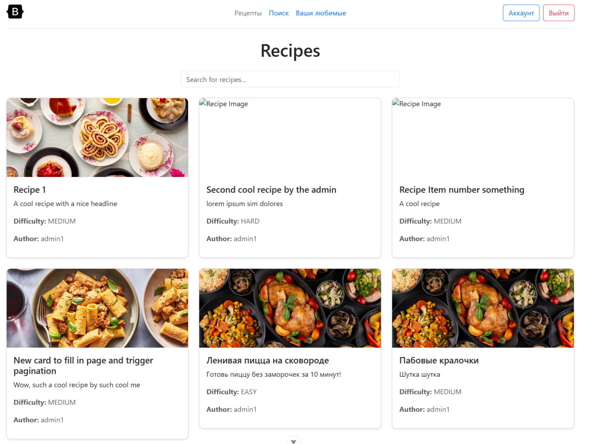
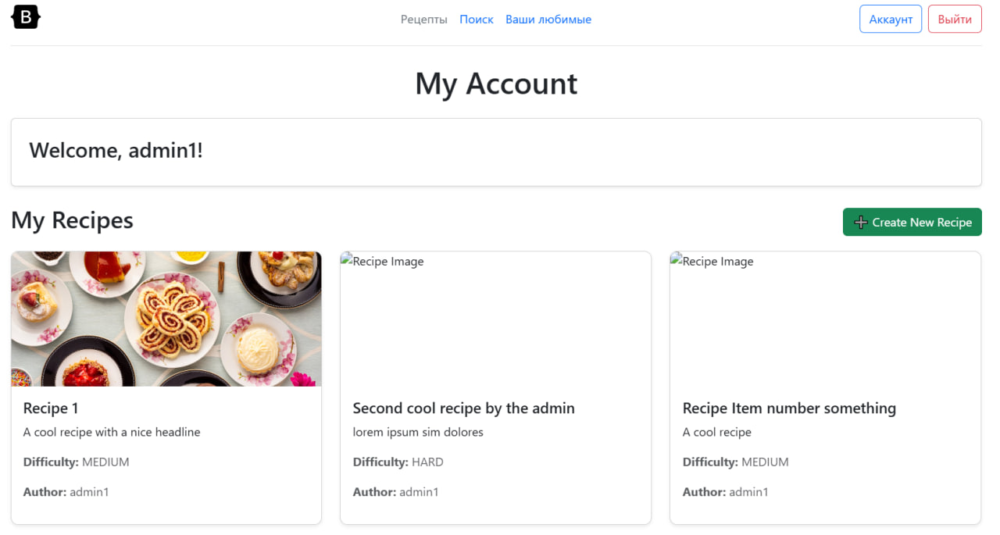
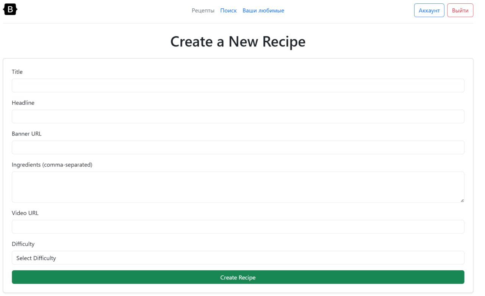
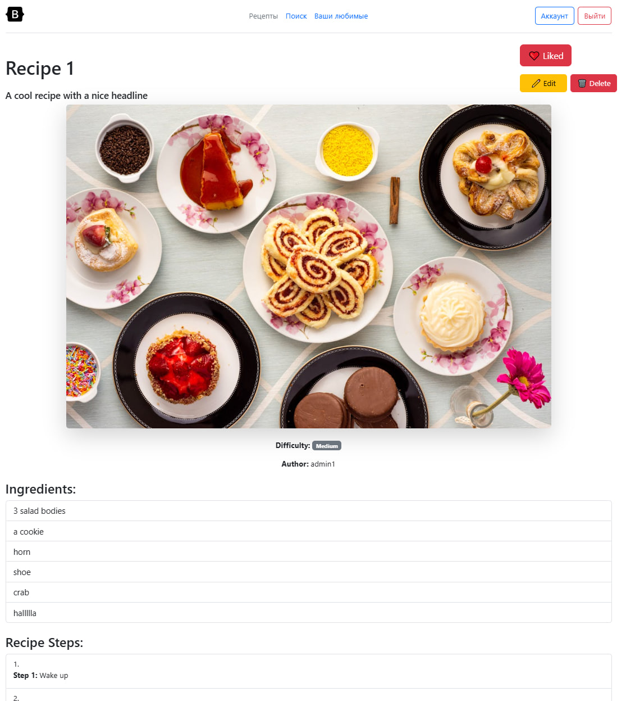

Отчет по Лабораторной работе №4
Сервис для обмена рецептами и кулинарных блогов
1. Аутентификация
- Настройка Axios с базовым URL и токеном аутентификации.
- Добавление интерцепторов для автоматической подстановки токена и обработки ошибок.
Регистрация (registerUser)
- Отправляет данные пользователя (
email,username,password) наauth/users/. - Проверяет совпадение паролей перед отправкой.
- В случае успеха показывает сообщение и возвращает пользователя назад.
Логин (PerformLogin)
- Проверяет учетные данные (
username,password). - При успешной авторизации перенаправляет пользователя на главную страницу.
- В случае ошибки выводит сообщение.
2. Работа с рецептами
Загрузка списка рецептов (fetchRecipes)
- Отправляет GET-запрос на
recipes/с возможностью поиска. - Сохраняет загруженные рецепты и ссылки для пагинации (
nextPage,prevPage). - Автоматически обновляет список при изменении
searchTerm.
Загрузка конкретного рецепта (fetchRecipe)
- Загружает рецепт по
idизroute.params. - В случае ошибки устанавливает
error.value.
Создание рецепта (createRecipe)
- Отправляет POST-запрос на
recipes/с новыми данными. - Поле
ingredientsпреобразуется в массив перед отправкой. - При успешном создании происходит редирект на страницу рецепта.
Редактирование рецепта (updateRecipe)
- Отправляет PUT-запрос на
recipes/{id}/с обновленными данными. - Поле
ingredientsтакже преобразуется в массив. - В случае успеха происходит редирект обратно на страницу рецепта.
Удаление рецепта (deleteRecipe)
- Отправляет DELETE-запрос на
recipes/{id}/. - После удаления происходит редирект на главную страницу.
3. Управление шагами приготовления
Загрузка шагов (fetchSteps)
- Загружает список шагов рецепта
recipes/{id}/steps.
Добавление шага (addStep)
- Отправляет новый шаг через
POST recipes/{id}/steps/. - Добавляет шаг в
steps.value.
4. Функция лайков
Получение статуса лайка (fetchStatus)
- Загружает текущее состояние лайка (
true/false).
Переключение лайка (toggleLike)
- Отправляет POST-запрос на
recipes/{id}/like/. - Инвертирует текущее состояние лайка.
5. Дополнительные функции
Проверка прав редактирования (fetchEditable)
- Отправляет GET-запрос на
recipes/{id}/can_edit/. - Устанавливает
canEdit.valueвtrue, если у пользователя есть права редактирования.
Динамическое изменение класса кнопки (buttonClass)
- Изменяет стили кнопки лайка в зависимости от состояния (
btn-outline-dangerилиbtn-danger).
Скриншоты результата
Главная страница

Список Рецептов

Страница профиля

Создание рецепта

Страница рецепта

Запуск
npm run dev